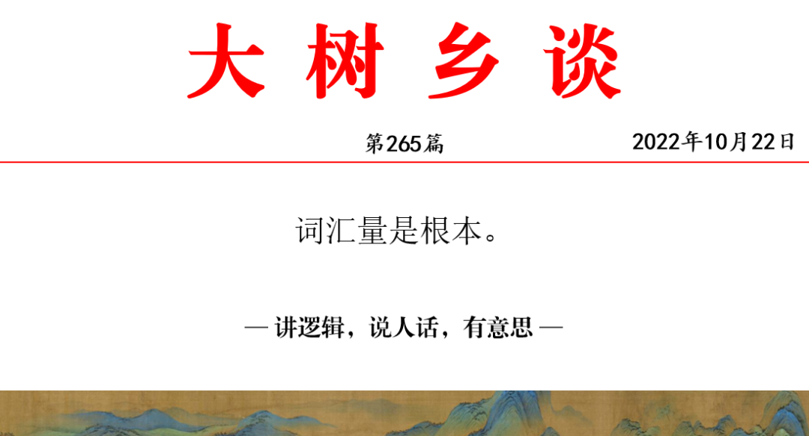

日进一步的简单方法


我们总是容易夸大进步的难度，但却往往吝啬今天的努力。努力是一定正确的大道理，但从大道理到实践有着巨大的鸿沟，从个人发展角度看，或许99%的努力都是无用的、重复的，只有1%的努力抓住了变革的关键，但我们无法提前知道这关键的1%在哪里，这就是努力的意义。努力最大的问题是感受不到进步，没有获得感，不知道自己的努力是否有成果，小镇有两个比较简单的做法：第一个做法：数据可视化。游戏是非常容易让人付出努力还能获得快乐的，关键就是即时反馈，无论升级的经验条有多长，只要付出努力，总会不断拉近实现目标的距离，所以在不喜欢玩游戏的人眼里，玩游戏的人其实很辛苦，但玩的人却乐在其中。
现实中目前不可能有这样一套系统，可以把人的成长或者目标数据化，比如早起多少天、跑了多少公里、读了多少书、与多少人交流过等等，把这些完成了就能够升级，获得升职加薪，这显然不可能。但是从个人进步角度，还是可以进行数据化，也不用太过复杂，在一定时间内就抓住一个或几个核心目标，梳理需要做的事情，估算大概有多少个明确的阶段，每天或者每周需要做什么，做到了就获得对应的积分，如此不断积累。又或者根据自己的目标和计划，对今天自己的表现打分，不用过于细致，就凭自己的主观感受，然后隔一段时间汇总一下，看看自己的评分是向上还是向下。
具体做的时候，也可以细化一下，增加一些加分项或者减分项，但不要过于复杂，毕竟这么做主要是为了对自己长期努力的成效进行评估，如果浪费太多时间和精力，那反而本末倒置。第二个做法：提高词汇量。词汇是思想的载体，学习语言，词汇是一切的基础，就像学英语，最有效的就是背单词，有了足够的单词量、对单词足够敏锐，剩下的就简单了。在个人进步或者学习上，掌握更多词汇也是重点，听说读写这些最常见的能力，恰恰是个人最关键的基础能力，对于重塑、升级自己的认知体系极为重要。
听与读是输入，影响自己； 说与写是输出，影响他人和世界，改变自己。这一切的根本还是词汇。这里说的词汇并不是像小时候学语文或者英语那样认字，而是把握住自己想要深入领域的特定词汇，这些词汇就代表着知识和认知。比如很多朋友说政府的报告看不懂，其实政府报告在用词上还是比较简单的，单纯从阅读理解上也就是高中水平，之所以难，就难在不理解特定的词汇，这些词汇背后代表的是一个复杂的体系，政府报告在拟文的时候，默认看的人知道这些词汇的意思，所以没有进行展开。
那么要做的事就简单了。拿起一份政府文件，做这几步：第一步：通读一遍，了解大体意思和文章结构，同时标出自己不理解的专门词汇。 第二部：以这些专门词汇为起点，不断检索、直到搞清楚。 第三步：自己整理一段话，用来解释这个专门词汇。比如这次大会报告的第四部分，谈“加快构建新发展格局，着力推动高质量发展”，显然“新发展格局”就是一个专门词汇，那就以这个词汇为线索通过百度等搜索软件检索，然后就发现了几个新的名词，比如“国内大循环”“国内国际双循环”，再以这些新的名词继续检索，尤其看看搜索到的官方相关文件以及有一定层次的专家、媒体的解读，这些解读中往往会提到一些例子，然后自己检索这些例子。
理解之后用自己习惯的或者能够理解的文字，把这个词概括一下，如此循环，直到把文件中所有自己不了解的词汇搞清楚，这份文件就完成了第一遍阅读。再然后就是以这份文件为纽带，继续用上面提到的检索方式，继续搜索，向前挖掘演化脉络，寻找与其他领域相关联的点，然后对比着看。这时候可以借助一些专家的解读，了解更多自己以前不知道的东西，自己织一张属于自己的知识网，整理出一本属于自己的词典。这个方法也适用于了解新的领域。检索、阅读、思考、总结，以一个个词汇为载体记录自己的思考，积累多了整个人的认知体系就会被重塑、升级，如此循环前进。
当然，词汇量多了，并不一定能够理解内在的逻辑关系。但就像只会几百个单词，就不可能学好英语一样，关键还是要有词汇量。这是一个慢功夫但更是巧功夫，如果每天都能完成1个词汇的学习，日积月累进步会远超想象，而且到后面熟练了、基础牢了，速度会越来越快，效果也更好。接下来解读大会报告，小镇也会对一些关键的词汇做一些举例，希望有更多的人掌握这门非常有用的“政府语言”。
PS：次条有个对未来预期的投票，上一次是在今年5月，时隔半年看看是否有变化，期待大家投票。
其他文章推荐
■ 相信国家的决断
■ 经济如此困难，中国会重新刺激房地产吗？
如果喜欢，还请点赞、“在看”和关注吧 欢迎分享，让更多人发现“大树乡谈”